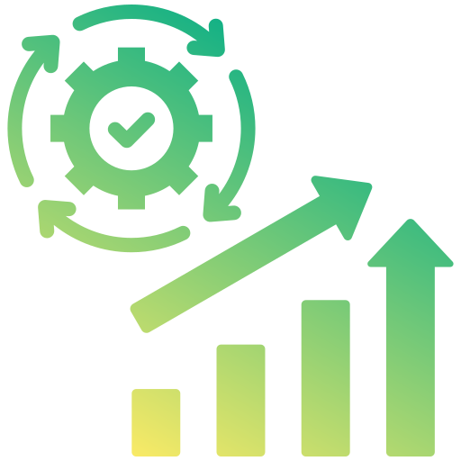
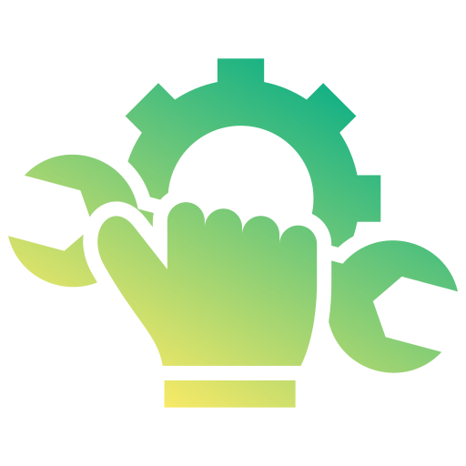
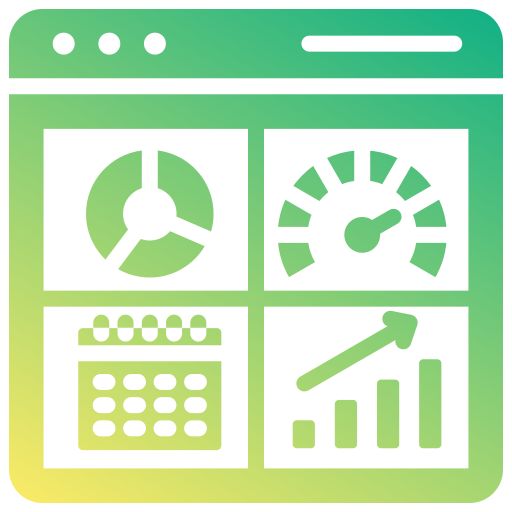

Versionen und Parallelwelten
Mehrere Dateien kursieren gleichzeitig. Niemand weiß sicher, welcher Stand gültig ist – und Abstimmungen kosten Zeit.
Wir helfen Teams, komplex gewordene Excel- oder Eigenlösungen in stabile, skalierbare Systeme zu überführen – schrittweise und ohne Systembruch.
Kostenfrei · 30 Min · unverbindlich

Schnell produktiv
Wartbar & schlankViele interne Tools starten klein. Mit jedem Sonderfall wächst die Logik, bis das Tool geschäftskritisch wird. Ab einem bestimmten Punkt hilft keine weitere „Excel-Pflege“ mehr – dann braucht es Struktur, Rechte und eine zentrale Datenbasis.
Einzelperson, schnell gebaut
Sonderlogik wächst
Abhängigkeiten & Risiko
Mehrbenutzerfähig & wartbar
Typisch ab Stufe 3:
Mehrere Dateien kursieren gleichzeitig. Niemand weiß sicher, welcher Stand gültig ist – und Abstimmungen kosten Zeit.
Die Regeln sind gewachsen, aber nicht dokumentiert. Änderungen erzeugen Seiteneffekte, die erst im Betrieb auffallen.
Sobald mehrere Personen gleichzeitig arbeiten, fehlen Rechte, Freigaben und eine zentrale Datenbasis – das Tool wird zum Engpass.
Wenn Sie sich hier wiedererkennen, ist Ihr Tool faktisch bereits eine Anwendung – wir helfen Ihnen, es schrittweise und risikoarm zu professionalisieren.
Ein mittelständischer Maschinenbauer arbeitete mit einer über Jahre gewachsenen Excel-Lösung zur Angebotskalkulation und Lagerprüfung. Die Datei war geschäftskritisch – aber komplex, fehleranfällig und nicht mehr für mehrere Nutzer geeignet.
Die Kalkulation bildete sämtliche Varianten und Zuschläge korrekt ab. Mit jeder Produkterweiterung wurde die Logik jedoch komplexer.
Niemand wollte die Datei grundlegend anfassen – sie funktionierte, aber war riskant.
Wir haben die bestehende Logik vollständig analysiert und dokumentiert. Statt alles neu zu denken, wurde die Kalkulationsstruktur schrittweise in eine Webanwendung überführt. Die Excel-Datei diente zunächst als Referenzsystem. Kritische Berechnungen wurden validiert, getestet und modular umgesetzt. So blieb das Risiko kontrollierbar – bei laufendem Betrieb.
Die neue Anwendung ermöglichte:
Der Zeitaufwand pro Angebot sank auf 2–3 Stunden. Die Investition von 24.500 € amortisierte sich in weniger als fünf Monaten.
Viele Unternehmen befinden sich an genau diesem Punkt: Das Tool funktioniert – aber es ist strukturell bereits eine Anwendung – nur ohne Architektur.
im Use Case
bis produktiv
bis zur Amortisation
Die Modernisierung gewachsener Tools muss kontrollierbar bleiben. Deshalb arbeiten wir strukturiert, transparent und in klar definierten Etappen.
Ziele, Engpässe und bestehende Logik verstehen.
Wir prüfen, ob und wo sich eine Modernisierung rechnet – fachlich und wirtschaftlich. Unverbindlich.
Strukturierte Analyse Ihrer bestehenden Lösung.
Wir dokumentieren Berechnungen, Datenflüsse und Abhängigkeiten und definieren ein klar abgegrenztes Arbeitspaket – mit transparentem Festpreis.
Kritische Logik wird getestet und abgesichert.
Bevor produktiv überführt wird, validieren wir Berechnungen und Abläufe anhand Ihres bestehenden Systems.
Modular statt Komplettaustausch.
Die neue Lösung wird in Etappen aufgebaut und parallel geprüft. Der laufende Betrieb bleibt stabil.
Einführung, Schulung und saubere Übergabe.
Sie erhalten Dokumentation, Einweisung und – falls gewünscht – ein klar definiertes Support-Paket.
Wir sind Jan Zedel und Khanh Tang – Wirtschaftsingenieur:innen mit technischem und betriebswirtschaftlichem Hintergrund. Seit 2019 unterstützen wir Industrie- und Mittelstandsunternehmen dabei, gewachsene Fachbereichs-Tools strukturiert zu modernisieren.
Was uns auszeichnet, ist nicht eine bestimmte Technologie – sondern ein tiefes Verständnis für Prozesse, Datenlogik und wirtschaftliche Zusammenhänge.
Wir kennen die Realität in Produktion, Qualitätsmanagement und Controlling. Deshalb entwickeln wir Lösungen, die im Alltag funktionieren – nicht nur auf dem Whiteboard.
Wir arbeiten direkt mit Fachbereichen, sprechen die Sprache von Management und operativen Teams und übernehmen Verantwortung für saubere, wartbare Strukturen.
Berlin ist unser Standort – unsere Projekte betreuen wir bundesweit.
Wir modernisieren gewachsene Fachbereichs-Tools dort, wo sie geschäftskritisch werden – strukturiert, risikoarm und mit klaren Zwischenschritten.
Wir analysieren gewachsene Excel- und Access-Lösungen, dokumentieren die Logik und stabilisieren kritische Berechnungen – ohne alles neu zu bauen.

Wir schaffen eine saubere Datenbasis für Auswertungen und Kennzahlen – unabhängig davon, ob die Lösung in Excel bleibt oder weiterentwickelt wird.
Wenn Mehrbenutzerfähigkeit, Rechtekonzepte oder zentrale Datenhaltung erforderlich werden, überführen wir bestehende Logiken in eine schlanke Weblösung.
In der Regel innerhalb weniger Wochen. Nach einem unverbindlichen Erstgespräch klären wir Umfang und Prioritäten. Kleinere Modernisierungsschritte können häufig zeitnah beginnen, ohne lange Vorlaufphase.
Der Umfang hängt von Komplexität, Datenlage und Integrationsbedarf ab. Kleinere Strukturierungs- oder Automatisierungsvorhaben bewegen sich häufig im Bereich von 3.000–10.000 €. Größere Modernisierungen oder Webanwendungen liegen entsprechend darüber. Eine belastbare Einschätzung ist nach einem Erstgespräch möglich – transparent und als Festpreis.
Nur wenn es fachlich sinnvoll ist. Wir arbeiten bevorzugt mit bestehenden Systemen und ergänzen gezielt dort, wo Struktur oder Skalierbarkeit fehlen. Ziel ist keine neue IT-Landschaft, sondern eine stabilere Lösung.
Wir dokumentieren bestehende Logiken, strukturieren Datenmodelle sauber und validieren kritische Berechnungen vor der Produktivsetzung. Jede Lösung wird so aufgebaut, dass sie nachvollziehbar, erweiterbar und intern übernehmbar bleibt.
Nein. In vielen Projekten bleibt die bestehende Excel-Lösung zunächst Referenz- oder Übergangssystem. Wir modernisieren schrittweise und ersetzen nur dort, wo es strukturell sinnvoll ist. Ziel ist Stabilität – nicht ein radikaler Systemwechsel.
Sie erhalten Dokumentation und eine strukturierte Übergabe. Optional unterstützen wir mit klar definierten Support-Leistungen. Es gibt keine langfristige Bindung – Sie behalten die Kontrolle über System und Code.
In einem unverbindlichen Gespräch klären wir Aufwand, Nutzen und sinnvolle nächste Schritte.
Erstgespräch vereinbarenOder direkt anrufen: +49 30 234 56 880